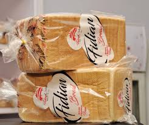
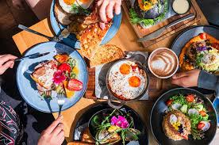
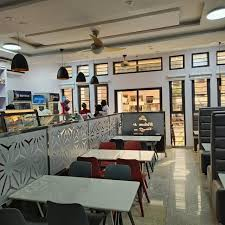

Website Preview
A first look at your homepage.
Before a single line of code is written, here is a sample concept of the experience your customers will have from day one on fidianchops.com. Layout, photography, and copy will be tailored to Fidian Chops during the build.
🔒 fidianchops.com
SAMPLE DESIGN
Fidian Chops
Menu
Cakes
Catering
The Hall
📍 Jos, NG
Order Now
Made with Love · Served with Joy
Experience the
Language of Taste
Language of Taste
ORDER
FOOD
FOOD
↓

Restaurant·
Custom Cakes·
Catering·
Conference Hall·
Paystack Payments·
Jos, Nigeria·
Order Online 24/7·
Restaurant·
Custom Cakes·
Catering·
Conference Hall·
Payments·
Jos, Nigeria·
Order Online 24/7·
Know About Us
Blending tradition & innovation to create unforgettable dining experiences
Read Our Story

Restaurant
Browse the full menu and place your order online
Order Now
Bakery
Custom cakes, pastries, and celebration bakes
Shop Cakes
Popular This Week
View full menu →
Restaurant
Jollof Rice Special

Bakery
Custom Birthday Cake

Conference Hall
Full Day Hall Booking
Domain Options for Fidian Chops · All Confirmed Available
fidianchops.com
Available · Primary recommendation · Included in your package
fidianchops.ng
Available · Nigerian TLD · Strongest local identity
thefidianchops.com
Available · Brand authority · "The" signals established presence
eatfidian.com
Available · Short · Action-driven · Memorable for word of mouth